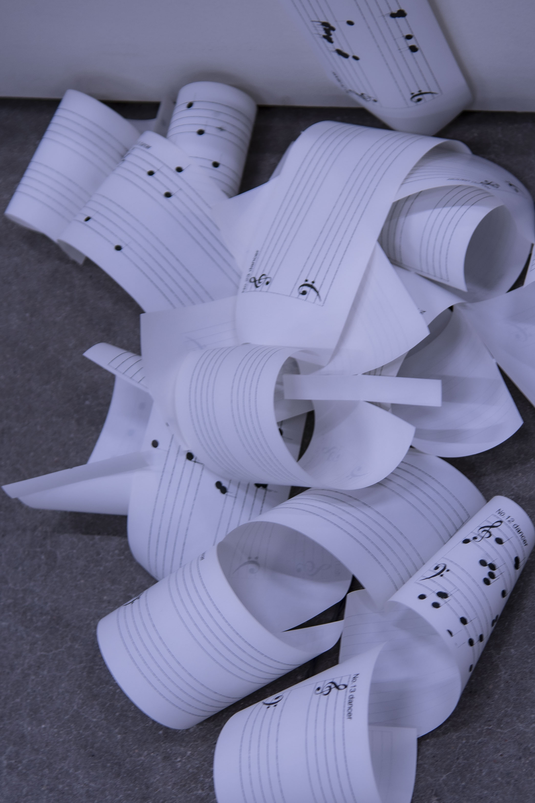
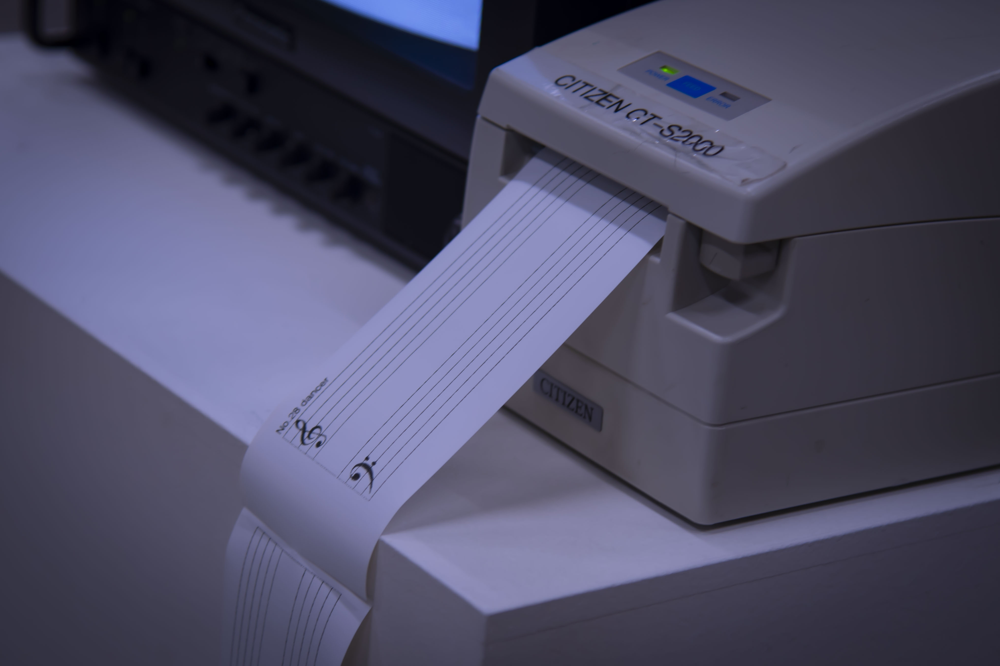
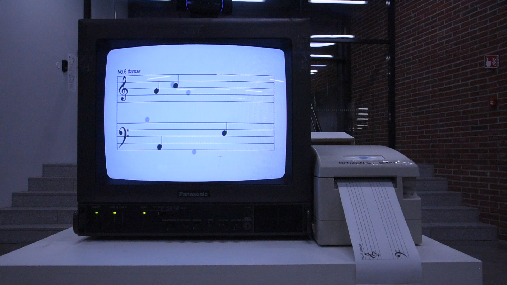

Body language is silent but full of emotion. We are used to dancing to music, but we ignore the subjectivity of body language. The translation of music into dance movement is universal, what if the opposite were true, translating movement into notes? It's time to write music with our own bodies.

Movements contain emotions in the moment, the flow of your consciousness, and can reflect your physical vitality.
Innovative ideas are conveyed through media archaeology, using old-fashioned equipment to make connections between traditional sheet music and human movement.


Try the digital version (no print) on this page. ⬇